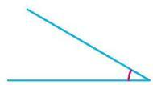
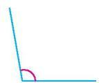
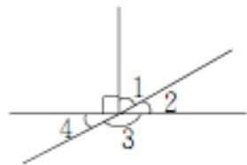
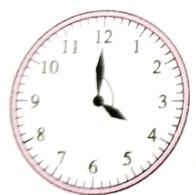
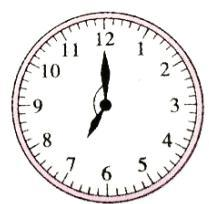

第二单元 · 角的度量
找清整个角，让每一步接起来
9月23日 · 修订3
1 万以上数的认识 → 2 角的度量 · 本次 → 3 多位数乘两位数 → 4 加法模型和乘法模型 → 5 平行四边形和梯形 → 6 条形统计图 → 7 复习与关联
先练整体与部分，再学每份与总量。14道主线＋2道接续，另有1次直角倍数核对。部分题有多个小问。可以分次做，不必一口气完成。
准备数学书、量角器、直尺、笔和草稿纸。A2和B5直接在数学书上做；本单不要求重复打印书中原图。打印手写单；打印预览。已有关系先做，需要时看示范；遇到展开的新关系教学，先学再练，卡住时可打开帮助；也可以暂停并保留位置。
A1A2A4A3A5A6A7B1B4B5B2B3B7B6R1R2需要时：大数换单位方法A1 · 实际操作与关系
把工具和角接起来
这是60°的步骤示意，不是下面题目的答案。拿出量角器：中心对准顶点，一条边对准0刻度线；沿从这个0开始的同一圈刻度，读另一条边到哪里。
图的边短也没关系：用直尺沿原方向延长，再读刻度。量完先看结果与开口是否相符；不要把角的位置朝向当成大小。
用量角器量出下面两个角的度数，再在○里填“＞”或“＜”。请在手写单完成。


我需要帮助
先检查中心是否正对顶点、0刻度线是否贴住一条边，再读同一圈。若边短，用直尺沿原方向延长。只核不确定的步骤。
做过后核对，保留原稿
题源标称：左30°，右100°，30°＜100°。实际量画允许合理的小测量误差；若差异明显，检查对齐、读圈和打印形变，不只改成答案。
题源：第三单元测试卷·第五题，选原题第一组；原题图保留。
下一项A2 · 实际操作与关系
从给定的边出发，不是找一个熟悉数字
示例用同一圈刻度：起始边在30°，要向两侧各转20°，可以到10°或50°。因为30−10＝20，50−30＝20；写着20的位置，并不一定离起始边20°。
回到书上：先找到OA所在的刻度，再在同一圈向两个方向各走50°，做记号。用直尺从O连到记号，保留原来的OA。最后核对新边与OA之间是否相差50°。
若你习惯把自己的量角器0线对齐OA，也可以这样画；两种有效方法都可以。
打开数学书第33页练习五第3题：以射线OA为一条边，画出两个开口方向不同的50°角。直接在书上画，不必重抄。
我需要帮助
先指明O和OA，保持它们不变。选择一圈刻度，从OA所在位置向另一侧走50°；两幅图选择不同方向。若仍不清楚，可把自己的量角器0线与OA对齐。
做过后核对，保留原稿
核对三点：两条新边都从O出发；每个角都保留OA；两次分别向OA的两侧张开50°。只在刻度50处画线不一定满足条件。请保留原稿，精度根据实际图判断。
题源：本人数学书第33页练习五第3题。书中原图为准；页面上方是另一个数值的教学示例。
下一项A4 · 关系练习
（1）图一已知∠3＝30°，求∠1、∠2。 （2）图二已知∠1＝65°，求∠2、∠3、∠4。


在手写单同号位置完成，保留必要算式和原稿。
我需要帮助
沿图上的一条完整直线看同侧的开口，或找直角标记。哪个整体里已有一部分知道了？先求你能确定的一个角，再看这个结果能接到哪里。
需要时看关系示范
让上一步接到下一步

教学示例：已知∠1＝60°。直角里还剩∠2，所以∠2＝90°−60°＝30°。接着，∠2和∠3拼成平角，∠3＝180°−30°＝150°。再用∠3与∠4的平角，得∠4＝30°。
刚求出的30°一直对应∠2；它成为下一步的已知部分。你可以指着图追一次连接，不必再抄示例。
我需要看具体怎样接
图一先找竖直边与水平边的直角，∠2与∠3组成它；另一个直角由∠1与∠2组成。求出共有的∠2，再接着求∠1。图二先找竖直边与右侧水平边的直角，∠1和∠2组成它，再找平角。这里帮助选择了关系，接着请你自己计算并写清角号。
做过后核对（先保留自己的结果）
图一：∠2＝90°−30°＝60°，∠1＝90°−60°＝30°。两个直角共有∠2。图二：∠2＝25°，∠3＝65°，∠4＝115°。每步用直角或平角关系；也接受其他正确方法。
看过答案可以当学习示例；不必为了核对重算已正确部分。仍不明白可以求助或暂停。
题源：2022-2023学年四年级数学上册典型例题系列之第三单元角的度量 人教版（解析版），见原题对应位置。
下一项A3 · 关系练习
求图中∠1、∠2、∠3的度数。

在手写单同号位置完成，保留必要算式和原稿。
我需要帮助
先找直角标记和完整的水平直线。已知角与哪个未知角恰好拼成直角或平角？按图中的角号分别写结果。
做过后核对（先保留自己的结果）
∠1＝180°−15°＝165°；∠2＝90°；∠3＝90°−50°＝40°。
看过答案可以当学习示例；不必为了核对重算已正确部分。仍不明白可以求助或暂停。
题源：《角的度量》同步试题（顶呱呱教育），见原题对应位置。
下一项A5 · 关系练习
合计和其中一份
教学示意：一个90°的角分成三部分，中间30°，两侧相等。去掉中间，剩下90°−30°＝60°，这是两侧合计。两侧一样大，所以每侧60°÷2＝30°。
检验：30°＋30°＋30°＝90°。下面换成原题，请自己把每个数对应回图里的部分；需要时再看帮助。
已知∠1＝∠3，∠2＝140°，求∠1、∠3各是多少度。

在手写单同号位置完成，保留必要算式和原稿。
我需要帮助
从平角中去掉中间的140°，留下的是两侧合起来的大小。不是只剩其中一个角。再看题目中两侧相等的条件，求出每一侧。
做过后核对（先保留自己的结果）
180°−140°＝40°，这是∠1与∠3的合计；40°÷2＝20°，所以两角各20°。核对20°＋140°＋20°＝180°。
看过答案可以当学习示例；不必为了核对重算已正确部分。仍不明白可以求助或暂停。
题源：《角的度量》同步试题（顶呱呱教育），见原题对应位置。
下一项A6 · 关系练习
“一定”要经得起不同情况
教学示意：只知道一个角是锐角，还不能确定它是20°、40°还是70°。判断“一定”时，要检查不同的合法情况，而不是只试一种。
你可以用数或画图找例子；一个不符合结论的合法例子，就能说明那句“一定”不成立。
两个锐角之和一定是（ ）。 A.直角 B.锐角 C.钝角 D.不能确定
可在草稿纸简短作答，不必重复抄题。
我需要帮助
“一定”要求所有符合条件的情况都成立。换两组锐角试试，和的类型会不会改变？
做过后核对（先保留自己的结果）
D。比如20°＋30°＝50°，40°＋50°＝90°，60°＋70°＝130°。可选其中合适的情况比较，不要求全部重写。
看过答案可以当学习示例；不必为了核对重算已正确部分。仍不明白可以求助或暂停。
题源：《角的度量》同步试题（顶呱呱教育），见原题对应位置。
下一项A7 · 关系练习
判断：一个钝角加上一个锐角的和小于平角。
可在草稿纸简短作答，不必重复抄题。
我需要帮助
钝角和锐角都不是固定度数。你可以选一组符合条件的角，检查它们的和。
做过后核对（先保留自己的结果）
不一定，原判断错误。例如120°＋70°＝190°，已经大于180°。也有和小于或等于180°的情况。
看过答案可以当学习示例；不必为了核对重算已正确部分。仍不明白可以求助或暂停。
题源：3.3 角的分类与画角，见原题对应位置。
下一项B1 · 关系练习
接着学之前，核对一次
直角的（ ）倍是360°。在纸上填一填，再用算式或图检查。保留第一次写的数；这一步是核对，不用另做一组题。
我需要把一份和总量接起来
这里的一份是一个直角90°，总量是360°。可以画四个直角拼一周，也可以用360°÷90°求有几份。回到空里填写，再乘回去检查。
核对这一步
填4：4×90°＝360°。8×90°＝720°，已经是两圈。若改了答案，保留原稿即可。
一圈可以怎样等分
教学示意：整圈360°分成12个相同大格，360°÷12＝30°，每大格30°。半圈是180°，半圈再平分是90°。
想一想为什么这里可以除以12：因为12份一样大。下面的折纸也用等分关系，可按说明在脑中折或用已有圆纸试。
将一张圆形纸对折两次，折成的角是（ ）。 A.平角 B.钝角 C.直角 D.周角
可在草稿纸简短作答，不必重复抄题。
我需要帮助
这里的操作是：圆对折得到半圆，再把所得半圆对折，使两半重合。可看教学示意，不必专门剪圆纸。
做过后核对（先保留自己的结果）
C。第一次半圆对应180°，将半圆再对折使两半重合，得到90°。
看过答案可以当学习示例；不必为了核对重算已正确部分。仍不明白可以求助或暂停。
题源：【分层训练】3.3 角的分类，见原题对应位置。
下一项B4 · 关系练习
不用量角器，求下面两个钟面上时针和分针之间夹角的度数。按图一、图二作答（选用原题第1、3幅）。


可在草稿纸简短作答，不必重复抄题。
我需要帮助
从一根针到另一根针，数所求开口里的间隔，不是数经过了几个数字。每大格30°。
做过后核对（先保留自己的结果）
图一120°；图二150°。所求较小夹角分别跨4、5个大格。
看过答案可以当学习示例；不必为了核对重算已正确部分。仍不明白可以求助或暂停。
题源：2022-2023学年四年级数学上册典型例题系列之第三单元角的度量 人教版（解析版），见原题对应位置。
下一项B5 · 实际操作与关系
先沿弧线看：这次问里面还是外面？
沿外侧绕：360°−60°＝300°。
同样两条边，中间的小开口和外侧的大开口合起来是一圈。弧线标在外侧，就要沿外侧看，不能默认回答较小的角。
示例的小角60°，外侧就是300°。回到教材第7题，先指出题目标的范围；需要时量出内侧小角，再求外侧。不能因为两条边看起来像直角，就自动答90°。
这是拓展，可以分次完成；不明白可暂停或求助。
打开数学书下一页练习五第7题。沿弧线确认所求范围，求两个外侧角的度数。用原图订正，在书上保留原答并写出新结果；手写单可记必要算式。
我需要帮助
一圈包含内侧和外侧两部分，合计360°。量角器直接量到的是内侧小角，题目若标外侧，还缺求剩余部分的一步。先确认范围，再计算。
做过后核对，保留原稿
左图：360°−90°＝270°。右图：外侧角＝360°−实际量出的内侧角；若内侧确认130°，外侧是230°。右图精确度数以原纸实量为准，不凭照片定死。这是原题教学订正，不是未见验证。
题源：本人数学书练习五第7题（星号拓展）。不重新印书页；沿原书标弧作答。
下一项B2 · 关系练习
走过的路，和停下的位置
教学示意：滑块展示同一段转动的不同进度，每格四分之一圈。向左拖是回看较早一步，不是在计算反向转动。
转满一圈回到起点，累计转角不会变回0°。
教学示意：分针从12出发走完整圈，又回到12。起终点一样，但它已经转过360°。时针走完整圈需要12小时，每小时只走一大格30°。
问“转过多少”，追踪这根针走过的路；问“两针夹角”，把钟停在那个时刻，看两根针间的开口。下面两题请分别看清问的是哪一种。
从6时到7时，时针旋转了多少度？分针旋转了多少度？
在手写单同号位置完成，保留必要算式和原稿。
我需要帮助
分别追踪两根针走过的路。时针走一个大格；分针走完整圈。别用最后的两针夹角代替走过的角。
做过后核对（先保留自己的结果）
时针30°；分针360°。分针虽然回到12，但已经走完一整圈。
看过答案可以当学习示例；不必为了核对重算已正确部分。仍不明白可以求助或暂停。
题源：2022-2023学年四年级数学上册典型例题系列之第三单元角的度量 人教版（解析版），见原题对应位置。
下一项B3 · 关系练习
6时整，时针与分针形成多少度的角？再过一个小时，两针形成多少度的角？
在手写单同号位置完成，保留必要算式和原稿。
我需要帮助
把钟停在6时、7时分别看。只看停下后的两针开口。
做过后核对（先保留自己的结果）
6时整180°；7时整150°。这是两个时刻的夹角，不是这一小时转过的总角。
看过答案可以当学习示例；不必为了核对重算已正确部分。仍不明白可以求助或暂停。
题源：2022-2023学年四年级数学上册典型例题系列之第三单元角的度量 人教版（解析版），见原题对应位置。
下一项B7 · 关系练习
∠1是∠2的3倍，∠1＝120°，求∠2。
可在草稿纸简短作答，不必重复抄题。
我需要帮助
把∠1看成三份相同大小的∠2。已知三份的合计，求一份。
做过后核对（先保留自己的结果）
∠2＝120°÷3＝40°。三个40°合起来为120°。
看过答案可以当学习示例；不必为了核对重算已正确部分。仍不明白可以求助或暂停。
题源：2022-2023学年四年级数学上册典型例题系列之第三单元角的度量 人教版（解析版），见原题对应位置。
下一项B6 · 关系练习
整圈不会消失
教学示意：转动一圈是360°，两圈是360°＋360°＝720°。已经走完的圈即使又回起点，也要计入总转角。
下面先自己判断；可以在纸上记圈数、算式，不必心算。
判断：从6:00到9:00，分针旋转了90°。
在手写单同号位置完成，保留必要算式和原稿。
我需要帮助
先确认是分针。每小时它走一圈；已经走完的整圈也属于转过的路，不能删去。
做过后核对（先保留自己的结果）
错误。经过3小时，分针走3个整圈：3×360°＝1080°。90°是这一时段时针的转角。
看过答案可以当学习示例；不必为了核对重算已正确部分。仍不明白可以求助或暂停。
题源：【分层训练】3.2 角的度量，见原题对应位置。
下一项R1 · 接续练习
从已经会的四舍五入接着用
省略万位后面的尾数，看千位。千位0—4舍去尾数；千位5—9，万位进一。先做下面的两个空，再把填好的数按规则核对。
（1）69□678≈70万，□里最小填多少？ （2）100□950≈100万，□里最大填多少？
在手写单同号位置完成，保留必要算式和原稿。
我需要帮助
把□所在的千位与四舍五入的规则对应起来。一个要求进到下一万，另一个要求不进到下一万。只检查你不确定的那一端。
做过后核对（先保留自己的结果）
（1）5；（2）4。分别检查千位是否使万位进一，以及是否保持100万。
看过答案可以当学习示例；不必为了核对重算已正确部分。仍不明白可以求助或暂停。
题源：【分层训练】1.6 亿以内的数的近似数，见原题对应位置。
下一项R2 · 接续练习
一个数用四舍五入法省略万位后面的尾数约是10万，这个数最大是多少？最小是多少？
在手写单同号位置完成，保留必要算式和原稿。
我需要帮助
最大数要留在约10万这一边，不能跨到约11万；最小数也要能进到10万。可把你写出的候选数四舍五入，再检查相邻的数。
我不知道怎样找到最大、最小数
教学示例：省略万位后约是20万。比20万小的数，至少从19万再有5000开始，才会进到20万，所以最小195000。比20万大的数，到20万再有5000就会进到21万，因此最大是205000前一个整数204999。
从两边接近目标：下边看什么时候刚够进来，上边看什么时候即将进到下一万。回到本题，按10万重新找两端。看过此示范后的结果按教学后练习记录。
做过后核对（先保留自己的结果）
最大104999，最小95000。104999约10万，105000约11万；95000约10万，94999约9万。
看过答案可以当学习示例；不必为了核对重算已正确部分。仍不明白可以求助或暂停。
题源：【分层训练】1.6 亿以内的数的近似数，见原题对应位置。
下一项需要时：大数换单位
已有方法正确就保留，不用重做旧题。
我想核查已经列好的算式
逐行核抄来的数、除数和位数；用商×除数（有余数再加余数）乘回去检查。旁边记下结果的单位，避免下一步读错。
我需要重新理解单位关系
1吨＝1000千克＝1000000克。因此1亿克＝100吨，4200亿克＝420000吨＝42万吨。这是原题教学示范，已经看过就不再当作独立验证。可以保留“亿”这个表示，不必先展开全部0。
这一段先到这里
保留首稿、修改和停下的位置。会做的部分不必反复重写。
返回路线